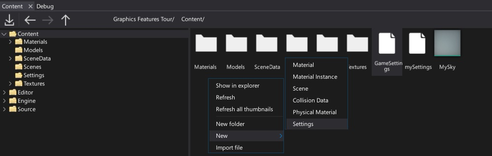
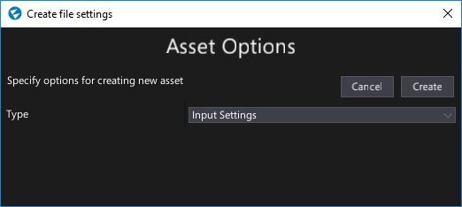
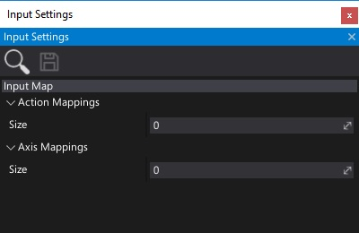
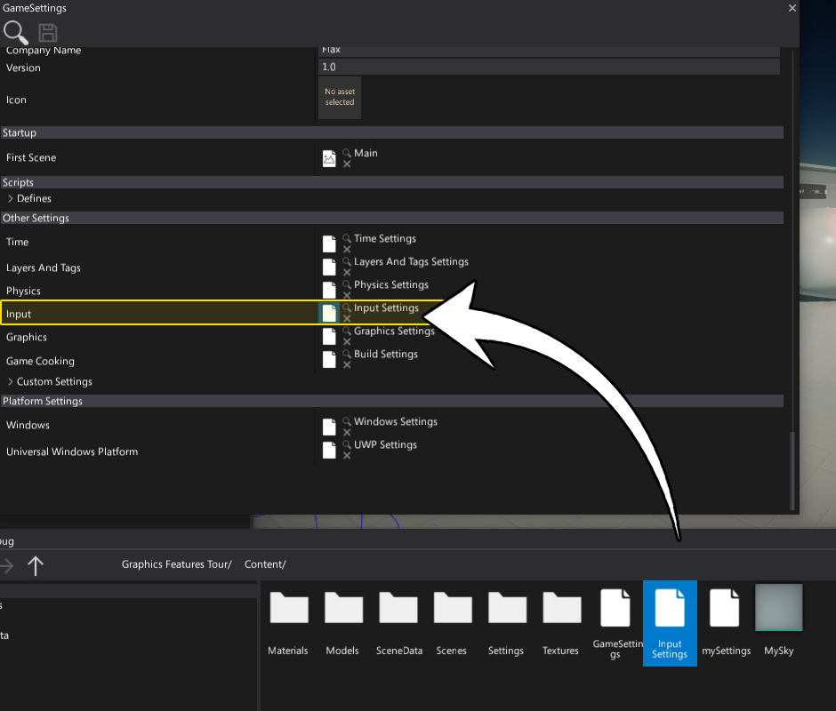
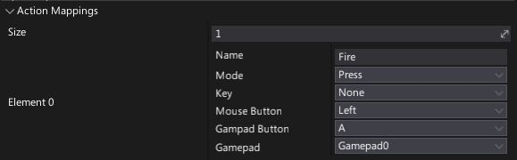
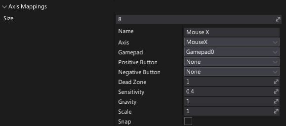
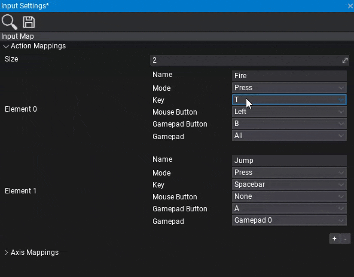

Input Settings
The Input Settings asset is used to specify the initial game input configuration. This asset contains a description of the virtual actions and axes that are used to map physical input data into the more unified usage. See Virtual Input to learn more about it.
Create input settings
Navigate to the Content directory in the Content window
Right-click and select option New -> Settings, specify the asset name (eg. Input Settings) and hit Enter
Choose option Input Settings and press the Create button
Double-click on an asset to open and edit it.

Use input settings
You can create as many input settings as you want (even special versions per platform) but only one can be used during game building. Use Game Settings asset (always located in Content/GameSettings.json) to link the input options. If your game is using a more advanced configuration, you can edit the game settings from code in your build script (use GameSettings.Load and GameSettings.Save from C# API).

Action Mappings

Action Mappings are used to configure virtual actions. It's useful to bind a physical mouse or gamepad buttons to specific actions identified by the name. Later the game may track those input events using action names.
Useful C# API: InputEvent, Input.ActionConfig and Input.ActionMappings.
| Property | Desciption |
|---|---|
| Name | The action "friendly name" used to access it from code. |
| Mode | The trigger mode. Allows to specify when input event should be fired. See InputActionMode. |
| Key | The keyboard key to map for this action. Use None to ignore it. |
| Mouse Button | The mouse button to map for this action. Use None to ignore it. |
| Gamepad Button | The gamepad button to map for this action. Use None to ignore it. |
| Gamepad | Which gamepad should be used. |
Axis Mappings

Axis Mappings are used to configure virtual axes. It's useful to bind a physical gamepad trigger or a mouse movement into a normalized and unified input source. Later the game may access those input axes values using a virtual input interface.
Useful C# API: InputAxis, Input.AxisConfig and Input.AxisMappings.
| Property | Desciption |
|---|---|
| Name | The axis "friendly name" used to access it from code. |
| Axis | The axis type (mouse, gamepad, etc.). See InputAxisType. |
| Gamepad | Which gamepad should be used. |
| Positive Button | The button to be pressed for movement in positive direction. Use None to ignore it. |
| Negative Button | The button to be pressed for movement in negative direction. Use None to ignore it. |
| Dead Zone | Any positive or negative values that are less than this number will register as zero. Useful for gamepads to specify the deadzone. |
| Sensitivity | For keyboard input, a larger value will result in faster response time (in units/s). A lower value will be more smooth. For Mouse delta the value will scale the actual mouse delta. |
| Gravity | For keyboard input, this describes how fast the input recenters. Speed (in units/s) at which the output value resets to the neutral value when the device is at rest. |
| Scale | Additional scale parameter applied to the axis value. Allows to invert it or modify the range. |
| Snap | If checked, the axis value will be immediately reset to zero after it receives opposite inputs. Used for keyboard input only. |
Keyboard Keys selection

Sometimes picking the right key for the action/axis mapping might be problematic because there are so many keyboard keys to scroll. To make this easier use your keyboard to search the item in the open context menu popup. You can also navigate with arrow keys around the list and confirm the choice with Enter. This makes it easier to setup your input settings. This feature works with all long context menu lists across the Editor.